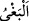

bilmediğiniz şeyler söylemenizi,” sıfatlarını inkar etmenizi ve onlar hakkında doğru
olmayan sözler sarfetmenizi, müşriklerin “Bize bu kötülükleri Allah emrediyor.”
demeleri gibi O’na iftira etmenizi “haram kılmıştır.”
et-Te’vîlâtü’n-Necmiyye’de şöyle denilmektedir: “
” (kötülükler), kulun
Rabb’ine giden yolunu kesen ve onu seyr ü sülûkdan alıkoyan her şeydir.
Avamın açık kötülüğü; yasaklanan şeyleri işlemeleri, gizli kötülüğü ise nehy
olundukları fiilleri gönüllerinden geçirmeleridir.
Havassın açık kötülüğü; zerre kadar dahi olsa içerisinde nefislerinin payı bulunan
işleri yapmak, gizli kötülükleri ise bir lahza dahi olsa sevgiliden uzak kalmaktır.
En seçilmiş olanların (ehass) açık kötülüğü, edeblerden birini terketmek ve herhangi
bir sebebe bel bağlamaktır. Gizli kötülükleri ise dünya ve ahirete ait bir nesneye
meyletmeleri ve Allah’tan başka bir varlığa iltifat göstermeleridir.
“
” (günah), göz açıp kapayıncaya kadar bile olsa Allah’dan yüz çevirmektir.
“
” (zulüm, saldırmak), Allah’tan başkasını sevmektir. Çünkü zulüm, bir şeyi
kendi yerinden başkasına koymak demektir.
“Allah’a şirk koşmaktan” maksad, şeriat tarafından ruhsat ve cevaz verilmediği
halde Allah’dan başkasından yardım talebinde bulunmaktır.
“Allah hakkında bilmediğiniz şeyleri söylemeniz”, nefsin arzu ve isteğine göre
hüküm vermeniz veya hakikatını bilmediğiniz bir şeyi, akılla hareket ederek Allah
hakkında söylemenizdir.
Ya da; Ma‘rifetullah konusunda, seyr ü sülûk edenlerin hallerini beyan hususunda,
makamları izah ve kerametleri isbat meselesinde bilmediğiniz ve gafil olduğunuz şeyleri
söylemeniz” demektir. et-Te’vîlâtü’n-Necmiyye’den yapılan nakil burada son bulmuştur.
Sonra Allah Teâlâ peygamberleri yalanlayan müşrikleri tehdid etmek üzere şöyle
buyurmuştur:
34. Her ümmetin bir eceli vardır. Ecelleri gelince ne bir an geri kalırlar ne de bir
an ileri gidebilirler.
Helâk olacak ümmetlerden “her ümmetin” helâkları için takdir edilmiş muayyen “bir
eceli vardır.” Onların köklerini kurutacak azabın inmesi için tayin edilmiş olan
“ecelleri gelince ne bir an geri kalırlar, ne de öne geçerler.” Yani o vakti
geciktiremezler, öne de alamazlar.
Yarın ecel önden ve arkadan sana gelince
Bir an bile ertelemez